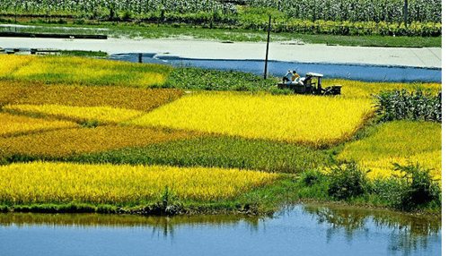
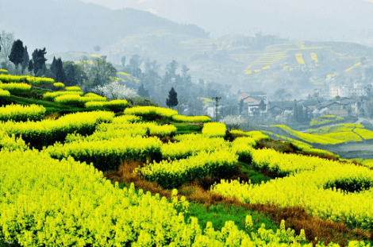
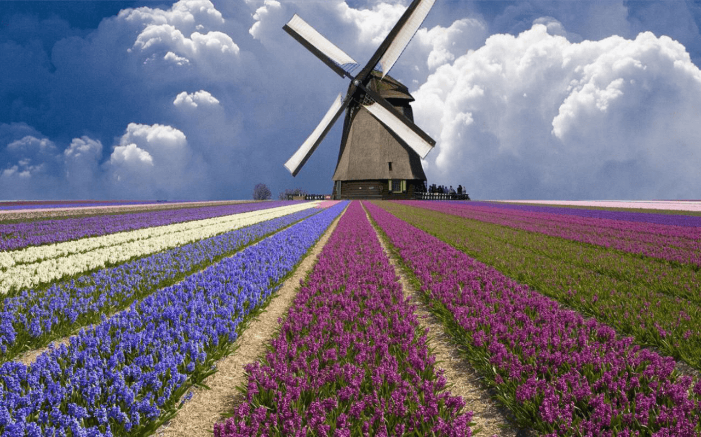
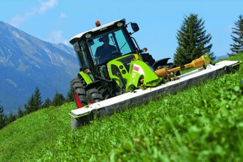
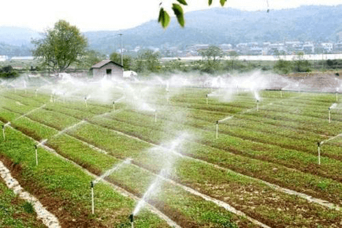
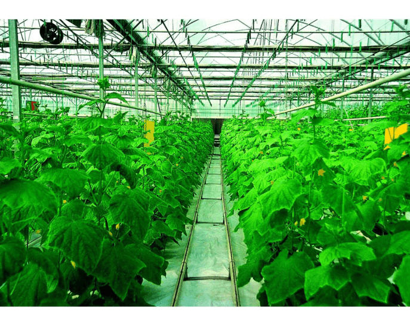
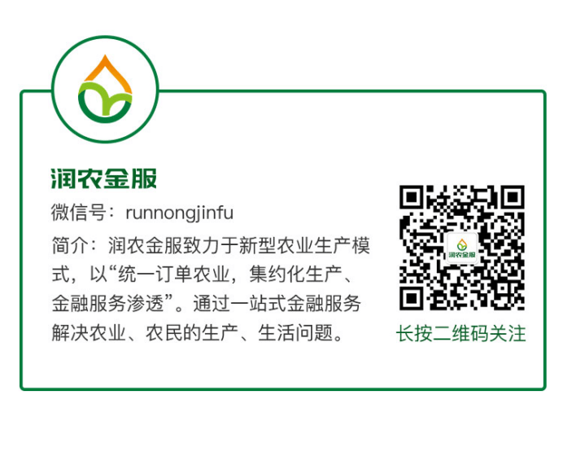

精致农业是什么？为什么比传统农业收益高？该如何发展？
在人类文明不断进步的过程中，小农生产，农产品竞争力低，农业发展环境恶化等问题困扰过许多地区。为谋求出路，许多国家和地区都采取了“进攻型农政”，发展精致农业。
所谓精致农业是什么呢？比如：在一家牧场，这里养的牛不仅要听音乐，睡“软床”，喝温热的纯净水，适当运动，还要天天做精油按摩……与一般的牛相比，真可谓是过着“神仙”般的日子。这样利用先进的科学技术，栽培、生产高质量的农产品就是精致农业的范例。
不难理解，精致农业是一个综合性的农业体系，依托农业传统技术和农业科技进步。以生产高品质、高科技含量、高附加值的农产品为目标，以特色化布局、标准化生产、产业化经营为主要抓手，从而实现高质量、高效益、高水平的一个农业生产全过程。这个过程怎么做才能有一定的成效？台湾的精致农业发展历程就是一个突出的例子。
不难理解，精致农业是一个综合性的农业体系，依托农业传统技术和农业科技进步。以生产高品质、高科技含量、高附加值的农产品为目标，以特色化布局、标准化生产、产业化经营为主要抓手，从而实现高质量、高效益、高水平的一个农业生产全过程。这个过程怎么做才能有一定的成效？台湾的精致农业发展历程就是一个突出的例子。
从1985年起，为了增强精致农业的发展后劲，台湾的农业试验所及下属各地区的场（所）都十分明确地围绕精致农业进行新技术和优良品种的研发，不间断地进行技术储备、提供技术支持。另外，台湾对精致农业的发展进行了大笔的财政投入及政策支持。同时配套严厉的水源、土壤保护制度。
根据国际上农业现代化的发展，经常调整和完善培训计划、措施，以提高培训服务质量。农户只要取得了“产销履历”验收证书，其农产品就可顺利进入超市或外销。重点培养知识化、技能化的新型农民。设立农民学院让农民终身学习，并鼓励农民子女接班永当农业精英，这为精致农业可持续发展打下了坚实的基础。
这样看来，台湾在发展精致农业过程中所积累的成熟经验，的确值得我们好好借鉴。具体该如何学习，需要从以下三个方面入手！
1、积极推进农业技术，强化科技支撑
科技是第一生产力。提高科技创新能力，是推进农业和农村现代化的源泉和动力，是实现农业增长方式的转变的关键，是推动新的农业科技革命，实施科教兴农和农业可持续发展的需要。唯有科技提高了，才能在根本生提高农业。科技的推进能够进一步解放生产力，促进农业生产的大发展。
2、因地制宜，发展特色农业
结合当地的自然和社会条件，利用市场导向控制供过于求的农产品的生产，推动有市场潜力的特色农产品的发展，全面打造优势主导特色产业。并积极引导农民投资发展大棚蔬菜、网箱等设施种植和设施养殖，逐步改善农业结构，满足社会日益增长的多样化、优质化需求，以提高农业综合效益。
3、提高农产品竞争力
唯有提高农业产业的竞争力才可以让中国的农业在世界经济贸易的前提下有立足之地。提高农业竞争力的途径一是开发新产品，抢先占据市场，占据优势地位。二来提高产品的质量，生产优质产品，在同类产品中拔得头筹。
精致农业是现代农业的新蓝海。目前，全国各地的农业示范区建设正在扎实推进。在山东，以聊城、德州建设国家精致农业示范区为契机，打造全省精致农业发展可复制、可推广的样本。在浙江象山，着力构建工业集聚、精致农业、休闲旅游三大区块，全力打造生态美、产业强、民力富的七彩果乡……除此之外，还有许多地区正在紧锣密鼓的开始加入到精致农业建设的队伍中。
随着大批示范区正如雨后春笋般崛地而起，当示范区的农业收入提高效果显著，周边农户也会积极主动的接受精致农业，从而实现在全国大面积的推行。以最少的投入和资源消耗获取最大的产出效益，提升农产品的国际竞争力的同时也让农民切实受益，始终是发展精致农业的重要意义。
当然，实现全面精致农业的道路是漫长的，还需要我们所有农业人士一起努力。撸起袖子，加油干吧！
